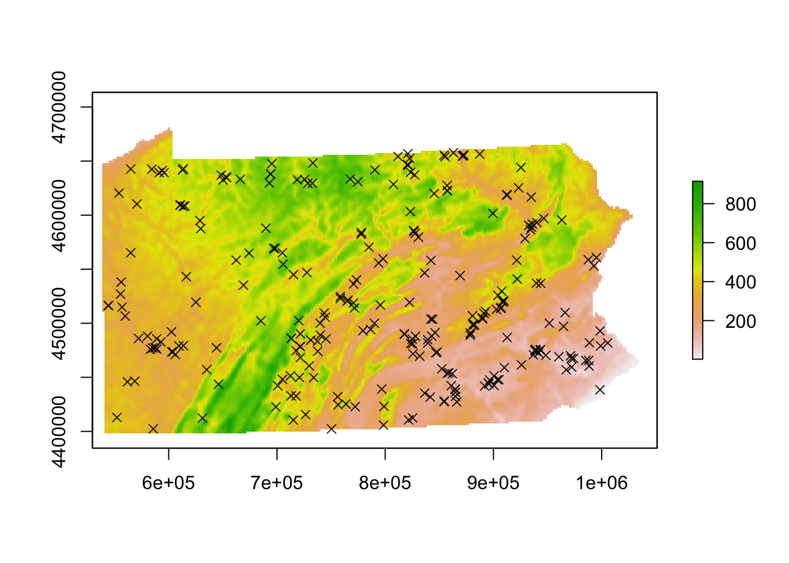
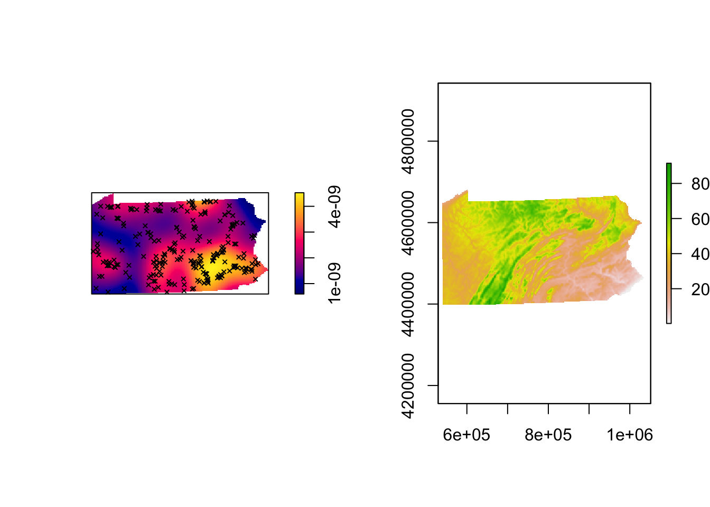
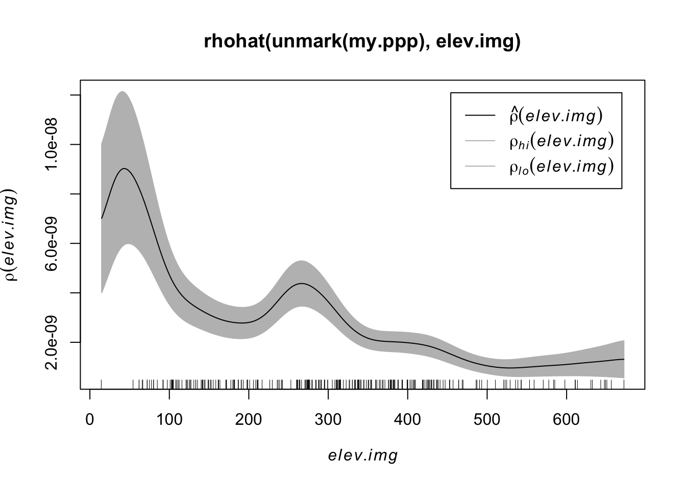
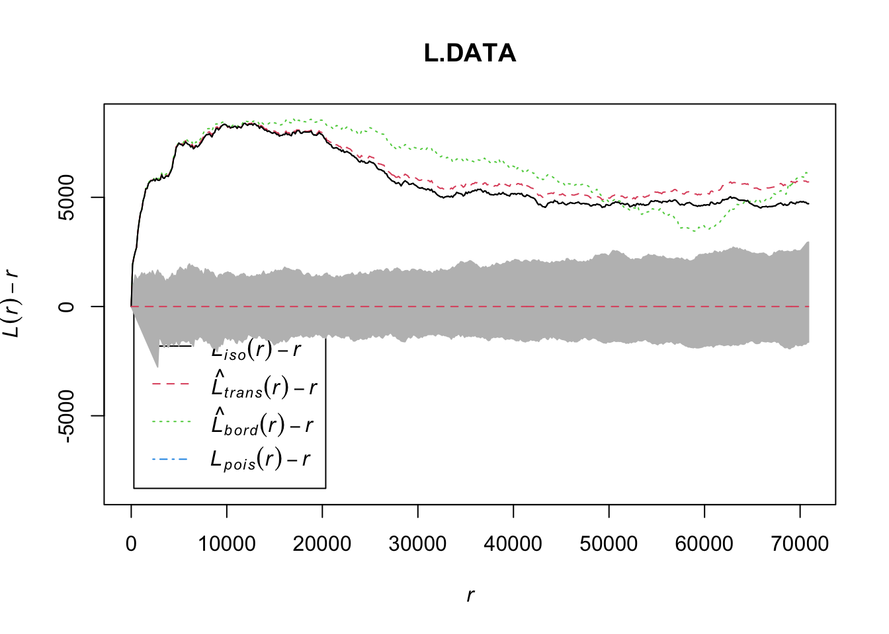

Chapter 5 Lab 4
Welcome to Lab 4, where we are going to continue to focus on Point Pattern Analysis. Specifically, we are going to move onto distance based approaches.
Objective: The goal of Lab 4 is to learn some introductory spatial statistical approaches for characterizing second-order properties of a point pattern. We will be focusing on nearest neighbour analysis and the F, G, K and L functions.
Data-sets: You will be conducting your analysis on a dataset on fossils in Pennsylvania. The data comes from a Paleobiology database that is maintained by an international non-governmental group of paleontologists. Members of the Paleobiology database add fossil occurrence data into the database from scientific publications If you wish to know more about the fossil data, you can see and explore it here: https://paleobiodb.org/#/
5.1 Lab 4 Set-Up
5.1.1 Create your Lab 4 project file
Open a new version of R-studio. Click the file menu, then new project in a new directory. Select your 364 directory, then name the project Lab 4. If you are stuck on this process, see the start of previous labs
You can check this has worked by looking on the file explorer on your computer, then selecting your GEOG364 folder and checking that a Lab 4 folder has appeared with your Lab4.Proj file inside it.
5.1.2 Create your NoteBook file
- Now, go to File/New File and create a new R-NOTEBOOK file.
- Delete the friendly text (everything from line 6 onward)
- Save your file as
GEOG364_Lab4_PSU.ID.Rmde.g.GEOG364_Lab4_hlg5155.Rmd - Follow Section 2.2.2 to modify your YAML code (you can keep lumen as a theme or try your own)
5.1.3 Download and run packages
Follow the instructions in Section 3.2.2. to download and install the following packages
USAboundarieselevatr
Now add a new code chunk in your script. Inside add the following code and run it.
library(maptools)
library(spatstat)
library(sp)
library(raster)
library(USAboundaries)
library(sf)
library(elevatr)The reason we are adding this just after typing it into your console is that these library commands need to be run every time you open R. So we put them in a code chunk right at the top of your Note Book file.
Now click the Preview Button and make sure everything looks correct. IF THERE ARE PROBLEMS, TALK TO AN INSTRUCTOR
Don’t continue until you can make and view your html or nb.html file. If it doesn’t work, ask for help before moving on
5.2 Challenge 1, Exploratory analysis
Have you read and followed the lab set up above? (esp the code chunk) If not, go back and do that! You should also be inside your Lab 4 R project
The data you will be analyzing comes from here https://paleobiodb.org. I downloaded every record they had for Pennsylvania.
- Look around the website (including. the FAQ).
- Make a new sub heading in your script called Data Description
- Explain what the data is showing and where it comes from
For full marks for this section, include:
- A bullet pointed list
- A screenshot of something interesting with a caption
For including captions, see section 9.5.1 here: https://rmd4sci.njtierney.com/figures-tables-captions-.html#figures. Remember you also have the markdown quick reference guide by going to the help menu at the very top of your screen, then Markdown quick reference.
5.3 Challenge 2, set up the data
5.3.1 A. Read in and explore the point data
I have provided the code to read in your data. Create a new code chunk and copy the code below into your R-script. Replace the “WRITE YOUR COMMENTS HERE..” with your description of what is happening in the code
#------------------------------------------------------------------------------------------------
# WRITE YOUR COMMENTS HERE TO DESCRIBE WHAT IS HAPPENING
#------------------------------------------------------------------------------------------------
filelocation <- "https://raw.githubusercontent.com/hgreatrex/GEOG364_Labs/master/Lab_4/PA_fossils.csv"
download.file(filelocation, destfile = "PA_fossils.csv" , verbose=TRUE)
mydata <- read.csv("PA_fossils.csv")Create a new code chunk and use the dim, names and summary commands to work out how many rows and columns the data has. Use the table command on the period column (or your own method) to see how many fossils were found in the Mississippian time-period.
5.3.2 B. Read in the other data and set projections
I have provided the code to read in your data. Create a new code chunk and copy the code below into your R-script.
#------------------------------------------------------------------------------------------------
# WRITE YOUR COMMENTS HERE TO DESCRIBE WHAT IS HAPPENING
# us_states is from the USAboundaries package
#------------------------------------------------------------------------------------------------
state.border <- us_states(states = "pennsylvania")
state.border <- st_transform(state.border,6346)
#------------------------------------------------------------------------------------------------
# WRITE YOUR COMMENTS HERE TO DESCRIBE WHAT IS HAPPENING
# get_elev_raster is from the elevatr package
#------------------------------------------------------------------------------------------------
elevation <- get_elev_raster(state.border, z = 5,clip="locations")
#------------------------------------------------------------------------------------------------
# WRITE YOUR COMMENTS HERE TO DESCRIBE WHAT IS HAPPENING
#------------------------------------------------------------------------------------------------
mydata_sf <- st_as_sf(mydata, coords = c("Long", "Lat"),crs=4326)
mydata_sf <- st_transform(mydata_sf,6346)As before, your job is to describe what is happening in each section of the code. Replace the “WRITE YOUR COMMENTS HERE..” with your description of each section of code. Remember if you are not sure what a command does:
- you can google it
- you can look at its helpfile by typing a ? before its name into the console e.g.
?st_as_sf - or you might have seen it in previous labs.
Now, in a new code chunk, use the projection command to check the map projection of elevation, mydata_sf and state.border. They should be identical.
Below the code chunk, explain why I chose this map projection for the data. You can use this website to find out more about its projection by searching for its “EPSG code” https://epsg.io/ (the code I chose for this projection is 6346).
5.4 Challenge 3, Make data ppp
Similar to last week, we are now going to analyse the data using commands from the spatstat package. This package of commands we use for point pattern data requires that we convert the data into a data-format called ppp.
To create a ppp object we need to use the as.ppp() command in R.
Look at the help file for the ppp command by typing ?ppp into the console or searching the help tab for ppp. By examining the help file we see that the ppp command requires 4 types of information: - x coordinates of each event and y coordinates of each event (or a “sp” data format) - window size (i.e., region size), - any marks (i.e., values/data for each event).
#------------------------------------------------------------------------------------------------
# Create the boundary for the ppp data (the state border), then create the ppp file
#------------------------------------------------------------------------------------------------
# This just converts stateowin to the correct file format.
stateowin <- as(as_Spatial(state.border), "owin")## Warning in showSRID(uprojargs, format = "PROJ", multiline = "NO"): Discarded
## datum Unknown based on GRS80 ellipsoid in CRS definition## Warning in as.ppp.sf(mydata_sf): only first attribute column is used for marks Window(my.ppp) <- stateowin
#and then we plot
plot(elevation)
plot(my.ppp,use.marks = F,cex = 1, pch = 4,add=TRUE)
Copy the code above into a new code chunk and make sure it runs. You might get errors about Discarded datum Unknown based on GRS80 ellipsoid in CRS definition, or only first attribute column is used for marks. Ignore them.
Look at the output of the plot, which shows the points plotted over elevation data. Below the code chunk, write your assessment of the spatial structure of the fossils. In your opinion are they clustered/random or uniform?
5.5 Challenge 4, quadrat analysis
Create a new heading called Quadrat Analysis. Use the code in Lab 3 and Test 1, to conduct a quadrat analysis on the data. You should include:
- The Variance Mean Ratio (and interpretation of the result)
- A plot of the quadrat counts.
- A hypothesis test (written up in English, but using the output of quadrat.test)
- A plot of the density of the points
You can choose a number of grid squares that seem reasonable (enough to show variation, not so many that there are a load of zeros)
5.6 Challenge 5, elevation links
Create a new heading called Elevation and below this, copy across the two code chunks below.
# Set up 3 plots in a column
par(mfrow = c(1,2))
#------------------------------------------------------------------------------------------------
# First plot the density
#------------------------------------------------------------------------------------------------
plot(density(my.ppp),main=NULL)
plot(my.ppp,cex = .5, pch = 4,add=TRUE)
#------------------------------------------------------------------------------------------------
# Then plot the elevation
#------------------------------------------------------------------------------------------------
plot(elevation)
#------------------------------------------------------------------------------------------------
# and see if elevation is linked to the point density
#------------------------------------------------------------------------------------------------
# convert the elevation to a ppp image
elev.img <- as.im.RasterLayer(elevation)
#and look at the relationship with the points
plot(rhohat(unmark(my.ppp), elev.img))
From this output, write what appears to be the relationships between elevation and fossils. Do you think there might be a physical reason for this? When you look at the point data, do you see any other things you would like to compare the data to?
5.7 Challenge 6 Nearest neighbour
Create a new heading called nearest neighbour (spelled either the American or British way!)
The
nndistcommand calculates the distance of the nearest neighbour for every point. Create a code chunk and run the nndist command on your ppp point pattern data. Assign the answer to a variable called myNNDist.Now, make a histogram of the NNDist output using the command
hist(myNNDist,br=50)Underneath the code, explain what the output of the code is showing you. What units are the distances in? (hint, think what you learned about your map projection)
We can now easily calculate the average nearest neighbor distance and the ratio. Note, the command for the ratio is named after the people who invented it, Clarke & Evans. Type ?clarkevans into the help file for more details.
Create a code chunk and add/run the following
#------------------------------------------------------------------------------------------------
# Mean nearest neighbour
#------------------------------------------------------------------------------------------------
print("The mean nearest neighbour distance is:")
print(mean(round(myNNDist,3)))
#------------------------------------------------------------------------------------------------
# R ratio
#------------------------------------------------------------------------------------------------
R.Ratio <- clarkevans(my.ppp)
print("The R ratio is:")
print(R.Ratio)The output of the R.Ratio likely gives you two values, naive and cdf. CDF is simply a mathematical way of taking into account edge effects. Below the code chunk output, write a sentence or two to describe why edge effects might be an issue in this case.
Then write your interpretion of the output.
- Does this show the data is clustered, random or dispersed?
- What would R typically be for very disperse data?
- What would R typically be for very clustered data?
5.8 Challenge 7 L Analysis
We will now conduct an L-Function analysis on the data. Make a new heading called L-function, Below, make a new code chunk and copy over this code and run it
#------------------------------------------------------------------------------------------------
# Calculate the L function and its uncertainty envelope
#------------------------------------------------------------------------------------------------
L.DATA <- Lest(my.ppp)
#------------------------------------------------------------------------------------------------
# Rather than simply saying something is “clustered” or “uniform”
# depending on how it subjectively looks to the
# IRP line, we can instead use Monte Carlo simulation to assess our data
# against many L patterns that were caused by an Independent Random Pattern.
# Here we generate 500 CSRs and calculate the L function for each one
#------------------------------------------------------------------------------------------------
L_DATA_envelope <- envelope(my.ppp, Lest, correction = "Ripley",
verbose = F,
nsim=500, nrank=1,
savepatterns = TRUE, savefuns = TRUE)
#------------------------------------------------------------------------------------------------
# Plot the raw L-function data for different edge effects. Ignore any warnings
#------------------------------------------------------------------------------------------------
plot(L.DATA, . - r ~ r,
ylim=c(0-(max(L.DATA$iso-L.DATA$r)),max(L.DATA-L.DATA$r)))
# Add the uncertainty envelope.
plot(L_DATA_envelope, . - r ~ r,add=TRUE)
Under the code chunk output, explain what is happening in the plot.
- What does the gray area represent?
- How many simulations were used to create the plot.
- What does it mean if the observed black line falls in the gray area? What does it mean if it’s above/below the gray area?
5.9 Challenge 8 Show me something new
Here you have a choice. I have just signed the entire class onto data camp, so you now have access to all the courses. If you feel that you are struggling with R and need to get a better grasp of the basics, if you complete at least 3 chapters of the “Introduction to R” data camp course and include completion screen-shots in your lab script, you can have the 5 marks. (https://www.datacamp.com/courses/free-introduction-to-r, but you will need to sign up using the link I sent)
OR, you can continue to do the classic “something new”. Remember you actually have to do something new, not repeat what you did in previous weeks
You could look at some other point pattern tutorials because they are all linked into spatstat. There are loads of things you could do to build your knowledge of point pattern analysis
- http://spatstat.org/Melb2018/solutions/solution03.html (density)
- http://spatstat.org/Melb2018/solutions/solution04.html (poisson)
- http://spatstat.org/Melb2018/solutions/solution05.html (marked)
- http://spatstat.org/Melb2018/solutions/solution06.html (K and L functions)
- https://mgimond.github.io/Spatial/point-pattern-analysis-in-r.html
You could try downloading and reading in a shapefile for PA and plotting it over your points.
You could try making some cool plots using tutorials like this: Cool mapping tutorial: https://bhaskarvk.github.io/user2017.geodataviz/notebooks/02-Static-Maps.nb.html
There are lots of ideas in the previous lab suggestions.
5.10 Lab-4 submission check
HTML FILE SUBMISSION - 10 marks
RMD CODE SUBMISSION - 10 marks
WORKING CODE - 10 marks: Your code works and the output of each code chunk is included in the html file output (e.g. you pressed run-all before you finished)
EASY TO READ LAB SCRIPT - 10 marks: Your final html file is neat and easy to read. For example, your headings are working, you have included any relevant formatting, new paragraphs are on new lines etc.
CHALLENGE 1 - 5 marks: You thoughtfully explored and described the paleobiology data in Lab Challenge 1
CHALLENGE 2 & 3-10 marks: You thoughtfully and correctly answered all the questions and read your data into Rstudio
CHALLENGE 4-20 marks: You correctly completed your quadrat analysis with all the required components of the quadrat analysis
CHALLENGE 5-10 marks: You correctly completed your elevation analysis with all the required components
CHALLENGE 6&7 10 marks: You correctly completed your nearest neighbour/L analysis with all the required components
SOMETHING NEW - 5 marks
You made a minor change to an existing piece of code (2.5/5) OR You demonstrated the use of a function or concept that was not specifically covered in the handout, lecture, or lab, OR completed 3/5 chapters of a data camp course (5/5)
[100 marks total]